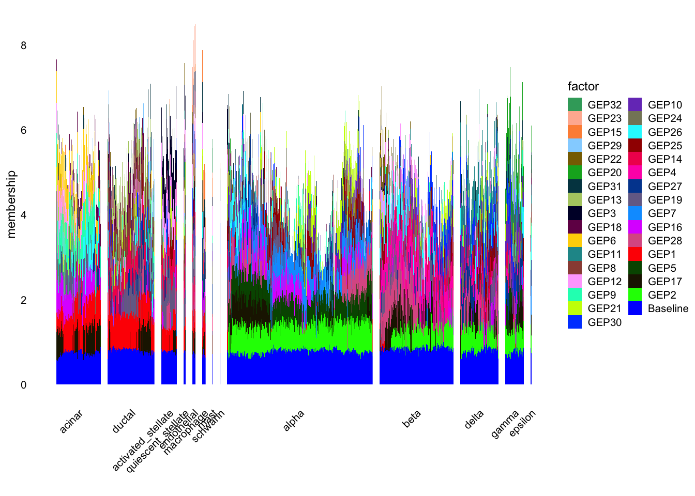

pancreas_celseq2_gbcd
Matthew Stephens
2025-07-02
Last updated: 2025-07-03
Checks: 7 0
Knit directory:
single-cell-jamboree/analysis/
This reproducible R Markdown analysis was created with workflowr (version 1.7.1). The Checks tab describes the reproducibility checks that were applied when the results were created. The Past versions tab lists the development history.
Great! Since the R Markdown file has been committed to the Git repository, you know the exact version of the code that produced these results.
Great job! The global environment was empty. Objects defined in the global environment can affect the analysis in your R Markdown file in unknown ways. For reproduciblity it’s best to always run the code in an empty environment.
The command set.seed(1) was run prior to running the
code in the R Markdown file. Setting a seed ensures that any results
that rely on randomness, e.g. subsampling or permutations, are
reproducible.
Great job! Recording the operating system, R version, and package versions is critical for reproducibility.
Nice! There were no cached chunks for this analysis, so you can be confident that you successfully produced the results during this run.
Great job! Using relative paths to the files within your workflowr project makes it easier to run your code on other machines.
Great! You are using Git for version control. Tracking code development and connecting the code version to the results is critical for reproducibility.
The results in this page were generated with repository version 4d8c6f6. See the Past versions tab to see a history of the changes made to the R Markdown and HTML files.
Note that you need to be careful to ensure that all relevant files for
the analysis have been committed to Git prior to generating the results
(you can use wflow_publish or
wflow_git_commit). workflowr only checks the R Markdown
file, but you know if there are other scripts or data files that it
depends on. Below is the status of the Git repository when the results
were generated:
Ignored files:
Ignored: .Rhistory
Ignored: .Rproj.user/
Untracked files:
Untracked: analysis/Rplot.pdf
Untracked: analysis/fit_pancreas_celseq2_snmf_k100.R
Untracked: analysis/pancreas_celseq2_snmf_k100.RData
Untracked: analysis/pancreas_celseq2_snmf_ms.Rmd
Untracked: output/pancreas_celseq2_snmf_k100.RData
Unstaged changes:
Modified: single-cell-jamboree.Rproj
Note that any generated files, e.g. HTML, png, CSS, etc., are not included in this status report because it is ok for generated content to have uncommitted changes.
These are the previous versions of the repository in which changes were
made to the R Markdown (analysis/pancreas_celseq2_gbcd.Rmd)
and HTML (docs/pancreas_celseq2_gbcd.html) files. If you’ve
configured a remote Git repository (see ?wflow_git_remote),
click on the hyperlinks in the table below to view the files as they
were in that past version.
| File | Version | Author | Date | Message |
|---|---|---|---|---|
| Rmd | 4d8c6f6 | Matthew Stephens | 2025-07-03 | workflowr::wflow_publish("analysis/pancreas_celseq2_gbcd.Rmd") |
library(gbcd)Loading required package: ebnmlibrary(flashier)
library(fastTopics)
library(Matrix)
library(ggplot2)
library(cowplot)
library(ggrepel)
library(RcppML)RcppML v0.5.5 using 'options(RcppML.threads = 0)' (all available threads), 'options(RcppML.verbose = FALSE)'Introduction
I want to try fitting gbcd to the Pancreas celseq2 data.
First I load the data and select the CEL-seq2 data, which should select 2,285 cells. Then I remove genes that are expressed in fewer than 10 cells, and compute the shifted log counts.
load("../data/pancreas.RData")
set.seed(1)
# Select the CEL-seq2 data (Muraro et al, 2016).
# This should select 2,285 cells.
i <- which(sample_info$tech == "celseq2")
sample_info <- sample_info[i,]
counts <- counts[i,]
# Remove genes that are expressed in fewer than 10 cells.
x <- colSums(counts > 0)
j <- which(x > 9)
counts <- counts[,j]
# Compute the shifted log counts.
a <- 1
s <- rowSums(counts)
s <- s/mean(s)
Y <- MatrixExtra::mapSparse(counts/(a*s),log1p)
dat <- Matrix::tcrossprod(Y)/ncol(Y) # cell by cells covariance matrixNow fit a gbcd model to the data, using the fit_gbcd
function.
fit.gbcd = fit_gbcd(Y, Kmax = 20)[1] "Form cell by cell covariance matrix..."
user system elapsed
22.574 0.273 23.241
[1] "Initialize GEP membership matrix L..."
Adding factor 1 to flash object...
Wrapping up...
Done.
Adding factor 2 to flash object...
Adding factor 3 to flash object...
Adding factor 4 to flash object...
Adding factor 5 to flash object...
Adding factor 6 to flash object...
Adding factor 7 to flash object...
Adding factor 8 to flash object...
Adding factor 9 to flash object...
Adding factor 10 to flash object...
Adding factor 11 to flash object...
Adding factor 12 to flash object...
Adding factor 13 to flash object...
Adding factor 14 to flash object...
Adding factor 15 to flash object...
Adding factor 16 to flash object...
Adding factor 17 to flash object...
Adding factor 18 to flash object...
Adding factor 19 to flash object...
Adding factor 20 to flash object...
Wrapping up...
Done.
Backfitting 20 factors (tolerance: 7.78e-02)...
Difference between iterations is within 1.0e+04...
Difference between iterations is within 1.0e+03...
--Maximum number of iterations reached!
Wrapping up...
Done.
Backfitting 20 factors (tolerance: 7.78e-02)...
Difference between iterations is within 1.0e+04...
Difference between iterations is within 1.0e+03...
Difference between iterations is within 1.0e+02...
Difference between iterations is within 1.0e+01...
Difference between iterations is within 1.0e+00...
--Maximum number of iterations reached!
Wrapping up...
Done.
user system elapsed
503.151 28.499 569.685
[1] "Estimate GEP membership matrix L..."
Backfitting 39 factors (tolerance: 7.78e-02)...
An update to factor 11 decreased the objective by 6.380e-01.
An update to factor 11 decreased the objective by 4.631e-01.
Difference between iterations is within 1.0e+05...
An update to factor 11 decreased the objective by 1.929e-01.
An update to factor 11 decreased the objective by 2.469e-01.
An update to factor 11 decreased the objective by 3.434e-01.
Difference between iterations is within 1.0e+04...
An update to factor 11 decreased the objective by 6.332e+00.
An update to factor 11 decreased the objective by 5.223e-01.
An update to factor 11 decreased the objective by 1.362e-03.
An update to factor 11 decreased the objective by 6.924e-04.
An update to factor 11 decreased the objective by 1.297e-03.
Difference between iterations is within 1.0e+03...
An update to factor 11 decreased the objective by 2.509e-04.
An update to factor 11 decreased the objective by 2.270e-03.
An update to factor 11 decreased the objective by 2.364e-03.
An update to factor 11 decreased the objective by 5.532e-04.
An update to factor 11 decreased the objective by 7.934e-04.
An update to factor 11 decreased the objective by 1.087e-03.
An update to factor 11 decreased the objective by 1.522e-03.
--Maximum number of iterations reached!
Wrapping up...
Done.
Backfitting 39 factors (tolerance: 7.78e-02)...
An update to factor 11 decreased the objective by 9.776e+00.
An update to factor 11 decreased the objective by 6.211e+00.
An update to factor 11 decreased the objective by 6.497e+00.
An update to factor 11 decreased the objective by 7.659e+00.
An update to factor 11 decreased the objective by 2.487e-03.
An update to factor 11 decreased the objective by 5.518e-04.
An update to factor 11 decreased the objective by 7.381e-04.
An update to factor 11 decreased the objective by 1.239e-03.
An update to factor 11 decreased the objective by 2.026e-03.
An update to factor 11 decreased the objective by 9.996e-05.
An update to factor 11 decreased the objective by 2.296e-04.
Difference between iterations is within 1.0e+03...
An update to factor 11 decreased the objective by 6.140e-04.
An update to factor 11 decreased the objective by 4.609e-04.
An update to factor 11 decreased the objective by 3.069e-04.
An update to factor 11 decreased the objective by 2.173e-04.
An update to factor 11 decreased the objective by 1.859e-04.
An update to factor 11 decreased the objective by 1.387e-04.
An update to factor 11 decreased the objective by 2.506e-04.
An update to factor 11 decreased the objective by 2.012e-04.
An update to factor 11 decreased the objective by 3.130e-04.
An update to factor 11 decreased the objective by 3.199e-04.
An update to factor 11 decreased the objective by 1.714e-07.
An update to factor 11 decreased the objective by 1.207e-06.
An update to factor 11 decreased the objective by 2.896e-04.
An update to factor 11 decreased the objective by 3.017e-07.
An update to factor 11 decreased the objective by 1.717e-04.
An update to factor 11 decreased the objective by 1.937e-06.
An update to factor 11 decreased the objective by 2.834e-04.
An update to factor 11 decreased the objective by 3.580e-06.
Difference between iterations is within 1.0e+02...
An update to factor 11 decreased the objective by 3.262e-04.
An update to factor 11 decreased the objective by 1.442e-06.
An update to factor 11 decreased the objective by 3.215e-06.
An update to factor 11 decreased the objective by 1.941e-06.
An update to factor 11 decreased the objective by 3.029e-06.
An update to factor 11 decreased the objective by 3.029e-04.
An update to factor 11 decreased the objective by 3.107e-06.
An update to factor 11 decreased the objective by 1.311e-06.
An update to factor 11 decreased the objective by 8.382e-07.
An update to factor 11 decreased the objective by 7.078e-08.
An update to factor 11 decreased the objective by 2.886e-04.
An update to factor 11 decreased the objective by 2.843e-04.
An update to factor 11 decreased the objective by 7.711e-07.
An update to factor 11 decreased the objective by 2.306e-06.
An update to factor 11 decreased the objective by 3.792e-03.
--Estimate of factor 11 is numerically zero!
An update to factor 11 decreased the objective by 2.550e-04.
--Estimate of factor 11 is numerically zero!
An update to factor 11 decreased the objective by 2.723e-04.
--Estimate of factor 11 is numerically zero!
An update to factor 11 decreased the objective by 2.386e-04.
An update to factor 11 decreased the objective by 1.811e-05.
An update to factor 11 decreased the objective by 8.138e-05.
--Estimate of factor 11 is numerically zero!
An update to factor 11 decreased the objective by 2.497e-04.
An update to factor 11 decreased the objective by 1.479e-05.
An update to factor 11 decreased the objective by 7.207e-05.
An update to factor 11 decreased the objective by 2.540e-02.
--Estimate of factor 11 is numerically zero!
An update to factor 11 decreased the objective by 1.026e-04.
--Estimate of factor 11 is numerically zero!
An update to factor 11 decreased the objective by 8.729e-05.
--Estimate of factor 11 is numerically zero!
An update to factor 11 decreased the objective by 5.640e-05.
--Estimate of factor 11 is numerically zero!
An update to factor 11 decreased the objective by 3.577e-05.
--Estimate of factor 11 is numerically zero!
An update to factor 11 decreased the objective by 4.756e-05.
--Estimate of factor 11 is numerically zero!
An update to factor 11 decreased the objective by 5.396e-05.
--Estimate of factor 11 is numerically zero!
An update to factor 11 decreased the objective by 6.146e-05.
--Estimate of factor 11 is numerically zero!
An update to factor 11 decreased the objective by 3.093e-05.
--Estimate of factor 11 is numerically zero!
An update to factor 11 decreased the objective by 4.366e-05.
--Estimate of factor 11 is numerically zero!
An update to factor 11 decreased the objective by 4.660e-05.
--Estimate of factor 11 is numerically zero!
An update to factor 11 decreased the objective by 5.139e-05.
--Estimate of factor 11 is numerically zero!
An update to factor 11 decreased the objective by 5.319e-05.
--Estimate of factor 11 is numerically zero!
An update to factor 11 decreased the objective by 6.454e-05.
--Estimate of factor 11 is numerically zero!
An update to factor 11 decreased the objective by 8.186e-05.
--Estimate of factor 11 is numerically zero!
An update to factor 11 decreased the objective by 8.067e-05.
--Estimate of factor 11 is numerically zero!
An update to factor 11 decreased the objective by 8.522e-05.
An update to factor 11 decreased the objective by 7.391e-04.
--Estimate of factor 11 is numerically zero!
An update to factor 11 decreased the objective by 6.808e-05.
--Estimate of factor 11 is numerically zero!
An update to factor 11 decreased the objective by 4.533e-05.
--Estimate of factor 11 is numerically zero!
An update to factor 11 decreased the objective by 3.513e-05.
--Estimate of factor 11 is numerically zero!
An update to factor 11 decreased the objective by 2.901e-05.
--Estimate of factor 11 is numerically zero!
An update to factor 11 decreased the objective by 1.074e-05.
--Estimate of factor 11 is numerically zero!
Difference between iterations is within 1.0e+01...
--Maximum number of iterations reached!
Wrapping up...
Done.
user system elapsed
534.943 28.937 565.535
[1] "Estimate GEP signature matrix F..."
Backfitting 28 factors (tolerance: 4.95e-01)...
Difference between iterations is within 1.0e+03...
Difference between iterations is within 1.0e+02...
Difference between iterations is within 1.0e+01...
Difference between iterations is within 1.0e+00...
Wrapping up...
Done.
user system elapsed
709.598 42.865 755.112 Plot the structure plot
sample_info <- transform(sample_info,celltype = factor(celltype))
celltype <- sample_info$celltype
celltype <-
factor(celltype,
c("acinar","ductal","activated_stellate","quiescent_stellate",
"endothelial","macrophage","mast","schwann","alpha","beta",
"delta","gamma","epsilon"))
L <- fit.gbcd$L
p1 <- structure_plot(L[,-(1:10)],grouping = celltype,
gap = 20,perplexity = 70,n = Inf) +
labs(y = "membership",fill = "factor",color = "factor")
plot(p1)
Volcano plot for a few GEPs
res.gbcd = fit.gbcd
for(GEP in c("GEP8","GEP10","GEP12","GEP15","GEP23")){
pdat <- data.frame(gene = rownames(res.gbcd$F$lfc),
lfc = res.gbcd$F$lfc[, GEP],
z = abs(res.gbcd$F$z_score[, GEP]),
lfsr = res.gbcd$F$lfsr[, GEP],
stringsAsFactors = FALSE)
pdat <- transform(pdat, lfsr = cut(lfsr, c(-1, 0.001, 0.01, 0.05, Inf)))
rows <- with(pdat, which(!(abs(lfc) > quantile(abs(lfc), 0.998) | (z > 10))))
pdat[rows, "gene"] <- ""
p = ggplot(pdat, aes(x = lfc, y = z, color = lfsr, label = gene)) + geom_point() +
geom_text_repel(color = "black", size = 2.5, segment.color = "black",
segment.size = 0.25, min.segment.length = 0,
max.overlaps = Inf, na.rm = TRUE) +
scale_color_manual(values = c("coral", "orange", "gold", "deepskyblue")) +
labs(x = "log-fold change", y = "|posterior z-score|") +
guides(colour = guide_legend(override.aes = list(size = 2))) +
theme(plot.title = element_text(hjust = 0.5,size = 12),
axis.text = element_text(size = 10),
axis.title = element_text(size = 10),
legend.title = element_text(size = 12),
legend.text = element_text(size = 10),
legend.position = "bottom") +
ggtitle(paste0("Volcano plot of gene signature for ",GEP))
plot(p)
}


Try regular NMF
Since I could not find a convenient implementation of symmetric NMF in R I used regular nmf on the Gram matrix (note that because it is symmetric the result tends to be close to symmetric, but it would be nice to have a version that properly respects symmetry.)
temp = nmf(as.matrix(dat),10)
p1 <- structure_plot(temp@w,grouping = celltype,
gap = 20,perplexity = 70,n = Inf) +
labs(y = "membership",fill = "factor",color = "factor")Running tsne on 274 x 10 matrix.Read the 274 x 10 data matrix successfully!
Using no_dims = 1, perplexity = 70.000000, and theta = 0.100000
Computing input similarities...
Building tree...
Done in 0.03 seconds (sparsity = 0.891337)!
Learning embedding...
Iteration 50: error is 45.202019 (50 iterations in 0.02 seconds)
Iteration 100: error is 45.050823 (50 iterations in 0.02 seconds)
Iteration 150: error is 45.058666 (50 iterations in 0.02 seconds)
Iteration 200: error is 45.050021 (50 iterations in 0.02 seconds)
Iteration 250: error is 45.059067 (50 iterations in 0.02 seconds)
Iteration 300: error is 0.714175 (50 iterations in 0.02 seconds)
Iteration 350: error is 0.709455 (50 iterations in 0.01 seconds)
Iteration 400: error is 0.709442 (50 iterations in 0.01 seconds)
Iteration 450: error is 0.709448 (50 iterations in 0.01 seconds)
Iteration 500: error is 0.709448 (50 iterations in 0.01 seconds)
Iteration 550: error is 0.709448 (50 iterations in 0.01 seconds)
Iteration 600: error is 0.709443 (50 iterations in 0.01 seconds)
Iteration 650: error is 0.709448 (50 iterations in 0.01 seconds)
Iteration 700: error is 0.709448 (50 iterations in 0.01 seconds)
Iteration 750: error is 0.709443 (50 iterations in 0.01 seconds)
Iteration 800: error is 0.709448 (50 iterations in 0.01 seconds)
Iteration 850: error is 0.709448 (50 iterations in 0.01 seconds)
Iteration 900: error is 0.709443 (50 iterations in 0.01 seconds)
Iteration 950: error is 0.709448 (50 iterations in 0.01 seconds)
Iteration 1000: error is 0.709448 (50 iterations in 0.01 seconds)
Fitting performed in 0.29 seconds.Running tsne on 258 x 10 matrix.Read the 258 x 10 data matrix successfully!
Using no_dims = 1, perplexity = 70.000000, and theta = 0.100000
Computing input similarities...
Building tree...
Done in 0.03 seconds (sparsity = 0.934018)!
Learning embedding...
Iteration 50: error is 44.614611 (50 iterations in 0.02 seconds)
Iteration 100: error is 44.025269 (50 iterations in 0.02 seconds)
Iteration 150: error is 44.021221 (50 iterations in 0.02 seconds)
Iteration 200: error is 44.017811 (50 iterations in 0.02 seconds)
Iteration 250: error is 44.021043 (50 iterations in 0.02 seconds)
Iteration 300: error is 0.669961 (50 iterations in 0.01 seconds)
Iteration 350: error is 0.660775 (50 iterations in 0.01 seconds)
Iteration 400: error is 0.660730 (50 iterations in 0.01 seconds)
Iteration 450: error is 0.660731 (50 iterations in 0.01 seconds)
Iteration 500: error is 0.660731 (50 iterations in 0.01 seconds)
Iteration 550: error is 0.660731 (50 iterations in 0.01 seconds)
Iteration 600: error is 0.660731 (50 iterations in 0.01 seconds)
Iteration 650: error is 0.660731 (50 iterations in 0.01 seconds)
Iteration 700: error is 0.660731 (50 iterations in 0.01 seconds)
Iteration 750: error is 0.660731 (50 iterations in 0.01 seconds)
Iteration 800: error is 0.660731 (50 iterations in 0.01 seconds)
Iteration 850: error is 0.660731 (50 iterations in 0.01 seconds)
Iteration 900: error is 0.660731 (50 iterations in 0.01 seconds)
Iteration 950: error is 0.660731 (50 iterations in 0.01 seconds)
Iteration 1000: error is 0.660731 (50 iterations in 0.01 seconds)
Fitting performed in 0.26 seconds.Running tsne on 90 x 10 matrix.Read the 90 x 10 data matrix successfully!
Using no_dims = 1, perplexity = 28.000000, and theta = 0.100000
Computing input similarities...
Building tree...
Done in 0.00 seconds (sparsity = 0.983210)!
Learning embedding...
Iteration 50: error is 48.674819 (50 iterations in 0.00 seconds)
Iteration 100: error is 49.477593 (50 iterations in 0.00 seconds)
Iteration 150: error is 49.413597 (50 iterations in 0.00 seconds)
Iteration 200: error is 50.498457 (50 iterations in 0.00 seconds)
Iteration 250: error is 51.643978 (50 iterations in 0.00 seconds)
Iteration 300: error is 2.106221 (50 iterations in 0.00 seconds)
Iteration 350: error is 0.741434 (50 iterations in 0.00 seconds)
Iteration 400: error is 0.472935 (50 iterations in 0.00 seconds)
Iteration 450: error is 0.468116 (50 iterations in 0.00 seconds)
Iteration 500: error is 0.468110 (50 iterations in 0.00 seconds)
Iteration 550: error is 0.468109 (50 iterations in 0.00 seconds)
Iteration 600: error is 0.468110 (50 iterations in 0.00 seconds)
Iteration 650: error is 0.468110 (50 iterations in 0.00 seconds)
Iteration 700: error is 0.468110 (50 iterations in 0.00 seconds)
Iteration 750: error is 0.468110 (50 iterations in 0.00 seconds)
Iteration 800: error is 0.468110 (50 iterations in 0.00 seconds)
Iteration 850: error is 0.468110 (50 iterations in 0.00 seconds)
Iteration 900: error is 0.468110 (50 iterations in 0.00 seconds)
Iteration 950: error is 0.468110 (50 iterations in 0.00 seconds)
Iteration 1000: error is 0.468110 (50 iterations in 0.00 seconds)
Fitting performed in 0.06 seconds.Running tsne on 21 x 10 matrix.Read the 21 x 10 data matrix successfully!
Using no_dims = 1, perplexity = 5.000000, and theta = 0.100000
Computing input similarities...
Building tree...
Done in 0.00 seconds (sparsity = 0.829932)!
Learning embedding...
Iteration 50: error is 77.359324 (50 iterations in 0.00 seconds)
Iteration 100: error is 76.429022 (50 iterations in 0.00 seconds)
Iteration 150: error is 74.820843 (50 iterations in 0.00 seconds)
Iteration 200: error is 70.418554 (50 iterations in 0.00 seconds)
Iteration 250: error is 72.070643 (50 iterations in 0.00 seconds)
Iteration 300: error is 2.531773 (50 iterations in 0.00 seconds)
Iteration 350: error is 2.072695 (50 iterations in 0.00 seconds)
Iteration 400: error is 2.066777 (50 iterations in 0.00 seconds)
Iteration 450: error is 2.060084 (50 iterations in 0.00 seconds)
Iteration 500: error is 2.057953 (50 iterations in 0.00 seconds)
Iteration 550: error is 2.057950 (50 iterations in 0.00 seconds)
Iteration 600: error is 2.057949 (50 iterations in 0.00 seconds)
Iteration 650: error is 2.057948 (50 iterations in 0.00 seconds)
Iteration 700: error is 2.057946 (50 iterations in 0.00 seconds)
Iteration 750: error is 2.057944 (50 iterations in 0.00 seconds)
Iteration 800: error is 2.057942 (50 iterations in 0.00 seconds)
Iteration 850: error is 2.057939 (50 iterations in 0.00 seconds)
Iteration 900: error is 2.057936 (50 iterations in 0.00 seconds)
Iteration 950: error is 2.057933 (50 iterations in 0.00 seconds)
Iteration 1000: error is 2.057930 (50 iterations in 0.00 seconds)
Fitting performed in 0.01 seconds.Running tsne on 843 x 10 matrix.Read the 843 x 10 data matrix successfully!
Using no_dims = 1, perplexity = 70.000000, and theta = 0.100000
Computing input similarities...
Building tree...
Done in 0.10 seconds (sparsity = 0.316556)!
Learning embedding...
Iteration 50: error is 57.542228 (50 iterations in 0.06 seconds)
Iteration 100: error is 53.921400 (50 iterations in 0.06 seconds)
Iteration 150: error is 53.894658 (50 iterations in 0.05 seconds)
Iteration 200: error is 53.894272 (50 iterations in 0.05 seconds)
Iteration 250: error is 53.894271 (50 iterations in 0.05 seconds)
Iteration 300: error is 0.981008 (50 iterations in 0.05 seconds)
Iteration 350: error is 0.922532 (50 iterations in 0.05 seconds)
Iteration 400: error is 0.912849 (50 iterations in 0.05 seconds)
Iteration 450: error is 0.911205 (50 iterations in 0.05 seconds)
Iteration 500: error is 0.910978 (50 iterations in 0.05 seconds)
Iteration 550: error is 0.910931 (50 iterations in 0.05 seconds)
Iteration 600: error is 0.910915 (50 iterations in 0.05 seconds)
Iteration 650: error is 0.910908 (50 iterations in 0.05 seconds)
Iteration 700: error is 0.910906 (50 iterations in 0.05 seconds)
Iteration 750: error is 0.910901 (50 iterations in 0.05 seconds)
Iteration 800: error is 0.910901 (50 iterations in 0.05 seconds)
Iteration 850: error is 0.910898 (50 iterations in 0.05 seconds)
Iteration 900: error is 0.910900 (50 iterations in 0.05 seconds)
Iteration 950: error is 0.910897 (50 iterations in 0.05 seconds)
Iteration 1000: error is 0.910898 (50 iterations in 0.05 seconds)
Fitting performed in 1.07 seconds.Running tsne on 445 x 10 matrix.Read the 445 x 10 data matrix successfully!
Using no_dims = 1, perplexity = 70.000000, and theta = 0.100000
Computing input similarities...
Building tree...
Done in 0.05 seconds (sparsity = 0.577604)!
Learning embedding...
Iteration 50: error is 49.814600 (50 iterations in 0.03 seconds)
Iteration 100: error is 48.553840 (50 iterations in 0.03 seconds)
Iteration 150: error is 48.553112 (50 iterations in 0.02 seconds)
Iteration 200: error is 48.553109 (50 iterations in 0.02 seconds)
Iteration 250: error is 48.553106 (50 iterations in 0.02 seconds)
Iteration 300: error is 0.540286 (50 iterations in 0.03 seconds)
Iteration 350: error is 0.533518 (50 iterations in 0.02 seconds)
Iteration 400: error is 0.533430 (50 iterations in 0.02 seconds)
Iteration 450: error is 0.533429 (50 iterations in 0.02 seconds)
Iteration 500: error is 0.533429 (50 iterations in 0.02 seconds)
Iteration 550: error is 0.533429 (50 iterations in 0.02 seconds)
Iteration 600: error is 0.533429 (50 iterations in 0.02 seconds)
Iteration 650: error is 0.533429 (50 iterations in 0.02 seconds)
Iteration 700: error is 0.533429 (50 iterations in 0.02 seconds)
Iteration 750: error is 0.533429 (50 iterations in 0.02 seconds)
Iteration 800: error is 0.533429 (50 iterations in 0.02 seconds)
Iteration 850: error is 0.533429 (50 iterations in 0.02 seconds)
Iteration 900: error is 0.533429 (50 iterations in 0.02 seconds)
Iteration 950: error is 0.533429 (50 iterations in 0.02 seconds)
Iteration 1000: error is 0.533429 (50 iterations in 0.02 seconds)
Fitting performed in 0.49 seconds.Running tsne on 203 x 10 matrix.Read the 203 x 10 data matrix successfully!
Using no_dims = 1, perplexity = 66.000000, and theta = 0.100000
Computing input similarities...
Building tree...
Done in 0.02 seconds (sparsity = 0.993763)!
Learning embedding...
Iteration 50: error is 42.513384 (50 iterations in 0.01 seconds)
Iteration 100: error is 42.308155 (50 iterations in 0.01 seconds)
Iteration 150: error is 42.349078 (50 iterations in 0.01 seconds)
Iteration 200: error is 42.418540 (50 iterations in 0.01 seconds)
Iteration 250: error is 42.492489 (50 iterations in 0.01 seconds)
Iteration 300: error is 0.493282 (50 iterations in 0.01 seconds)
Iteration 350: error is 0.488524 (50 iterations in 0.01 seconds)
Iteration 400: error is 0.488526 (50 iterations in 0.01 seconds)
Iteration 450: error is 0.488526 (50 iterations in 0.01 seconds)
Iteration 500: error is 0.488526 (50 iterations in 0.01 seconds)
Iteration 550: error is 0.488525 (50 iterations in 0.01 seconds)
Iteration 600: error is 0.488526 (50 iterations in 0.01 seconds)
Iteration 650: error is 0.488526 (50 iterations in 0.01 seconds)
Iteration 700: error is 0.488526 (50 iterations in 0.01 seconds)
Iteration 750: error is 0.488526 (50 iterations in 0.01 seconds)
Iteration 800: error is 0.488526 (50 iterations in 0.01 seconds)
Iteration 850: error is 0.488526 (50 iterations in 0.01 seconds)
Iteration 900: error is 0.488526 (50 iterations in 0.01 seconds)
Iteration 950: error is 0.488526 (50 iterations in 0.01 seconds)
Iteration 1000: error is 0.488526 (50 iterations in 0.01 seconds)
Fitting performed in 0.18 seconds.Running tsne on 110 x 10 matrix.Read the 110 x 10 data matrix successfully!
Using no_dims = 1, perplexity = 35.000000, and theta = 0.100000
Computing input similarities...
Building tree...
Done in 0.00 seconds (sparsity = 0.987603)!
Learning embedding...
Iteration 50: error is 49.397071 (50 iterations in 0.00 seconds)
Iteration 100: error is 52.113761 (50 iterations in 0.00 seconds)
Iteration 150: error is 51.577903 (50 iterations in 0.01 seconds)
Iteration 200: error is 53.032972 (50 iterations in 0.00 seconds)
Iteration 250: error is 52.656930 (50 iterations in 0.00 seconds)
Iteration 300: error is 1.721970 (50 iterations in 0.00 seconds)
Iteration 350: error is 1.081070 (50 iterations in 0.00 seconds)
Iteration 400: error is 0.934760 (50 iterations in 0.00 seconds)
Iteration 450: error is 0.933822 (50 iterations in 0.00 seconds)
Iteration 500: error is 0.933818 (50 iterations in 0.00 seconds)
Iteration 550: error is 0.933818 (50 iterations in 0.00 seconds)
Iteration 600: error is 0.933818 (50 iterations in 0.00 seconds)
Iteration 650: error is 0.933818 (50 iterations in 0.00 seconds)
Iteration 700: error is 0.933818 (50 iterations in 0.00 seconds)
Iteration 750: error is 0.933818 (50 iterations in 0.00 seconds)
Iteration 800: error is 0.933818 (50 iterations in 0.00 seconds)
Iteration 850: error is 0.933818 (50 iterations in 0.00 seconds)
Iteration 900: error is 0.933818 (50 iterations in 0.00 seconds)
Iteration 950: error is 0.933818 (50 iterations in 0.00 seconds)
Iteration 1000: error is 0.933818 (50 iterations in 0.00 seconds)
Fitting performed in 0.08 seconds.plot(p1)
sessionInfo()R version 4.4.2 (2024-10-31)
Platform: aarch64-apple-darwin20
Running under: macOS Sequoia 15.5
Matrix products: default
BLAS: /Library/Frameworks/R.framework/Versions/4.4-arm64/Resources/lib/libRblas.0.dylib
LAPACK: /Library/Frameworks/R.framework/Versions/4.4-arm64/Resources/lib/libRlapack.dylib; LAPACK version 3.12.0
locale:
[1] en_US.UTF-8/en_US.UTF-8/en_US.UTF-8/C/en_US.UTF-8/en_US.UTF-8
time zone: America/Chicago
tzcode source: internal
attached base packages:
[1] stats graphics grDevices utils datasets methods base
other attached packages:
[1] RcppML_0.5.6 ggrepel_0.9.6 cowplot_1.1.3 ggplot2_3.5.2
[5] Matrix_1.7-2 fastTopics_0.7-07 flashier_1.0.56 gbcd_0.2-08
[9] ebnm_1.1-34
loaded via a namespace (and not attached):
[1] tidyselect_1.2.1 viridisLite_0.4.2 dplyr_1.1.4
[4] farver_2.1.2 fastmap_1.2.0 lazyeval_0.2.2
[7] promises_1.3.3 digest_0.6.37 lifecycle_1.0.4
[10] MatrixExtra_0.1.15 invgamma_1.1 magrittr_2.0.3
[13] compiler_4.4.2 rlang_1.1.6 sass_0.4.10
[16] progress_1.2.3 tools_4.4.2 yaml_2.3.10
[19] data.table_1.17.6 knitr_1.50 labeling_0.4.3
[22] prettyunits_1.2.0 htmlwidgets_1.6.4 scatterplot3d_0.3-44
[25] RColorBrewer_1.1-3 Rtsne_0.17 workflowr_1.7.1
[28] withr_3.0.2 purrr_1.0.4 grid_4.4.2
[31] git2r_0.35.0 colorspace_2.1-1 scales_1.4.0
[34] gtools_3.9.5 cli_3.6.5 rmarkdown_2.29
[37] crayon_1.5.3 generics_0.1.4 RcppParallel_5.1.10
[40] rstudioapi_0.17.1 httr_1.4.7 pbapply_1.7-2
[43] cachem_1.1.0 stringr_1.5.1 splines_4.4.2
[46] parallel_4.4.2 softImpute_1.4-3 vctrs_0.6.5
[49] jsonlite_2.0.0 hms_1.1.3 mixsqp_0.3-54
[52] irlba_2.3.5.1 horseshoe_0.2.0 trust_0.1-8
[55] plotly_4.11.0 jquerylib_0.1.4 tidyr_1.3.1
[58] glue_1.8.0 uwot_0.2.3 stringi_1.8.7
[61] Polychrome_1.5.4 gtable_0.3.6 later_1.4.2
[64] quadprog_1.5-8 tibble_3.3.0 pillar_1.10.2
[67] htmltools_0.5.8.1 float_0.3-2 truncnorm_1.0-9
[70] R6_2.6.1 rprojroot_2.0.4 evaluate_1.0.4
[73] lattice_0.22-6 RhpcBLASctl_0.23-42 SQUAREM_2021.1
[76] ashr_2.2-66 httpuv_1.6.15 bslib_0.9.0
[79] Rcpp_1.0.14 deconvolveR_1.2-1 whisker_0.4.1
[82] xfun_0.52 fs_1.6.6 pkgconfig_2.0.3